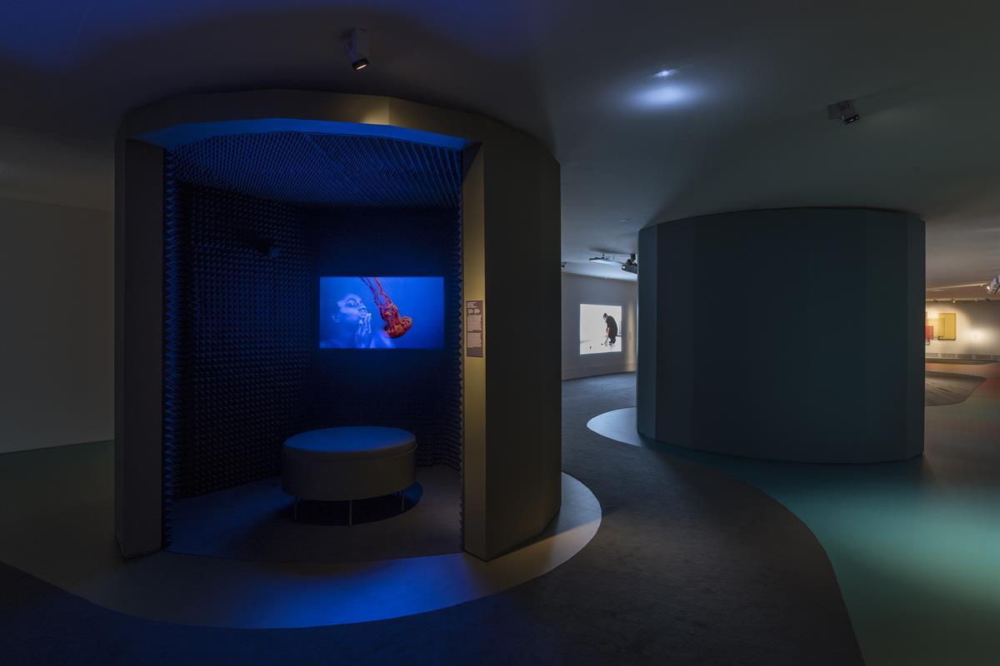

How to Tread Lightly
st_age expanded, an exhibition
Temporary Exhibition. From 6 October 2020 to 17 January 2021
The exhibition How to Tread Lightly is a unique opportunity to re-frame the challenges raised by the COVID-19 crisis in terms of supporting artistic practice. It asks how commissioning can be developed in a more caring and meaningful manner, and whether we might challenge the idea of the institution by transforming and adapting it to emerging scenarios.
The Museum and TBA21 will explore the above mentioned issues in an exhibition that engages with a series of newly commissioned works: those specifically produced for the galleries in Madrid, together with those produced for st_age, a digital platform launched in September. This project is a physical expansion of the online st_age: an invitation to artists, institutions, practitioners, and activists to engage together with the current moment, and the many urgent issues that it has made more visible.
It is a platform to present newly produced works and to generate critical discourse as a mitigation against cultural loss in the current climate, while raising awareness of the most relevant and pressing issues of our times. We can offer refuge and support within this new digital site. It aims to establish ground for discussion and collaboration between different disciplines and generations so that together we can build the foundations of a new cultural space.
At the same time, the exhibition provides a wide overview of contemporary artistic practice by working with a new generation of artists within their communities and from diverse geographies. st_age invites them to imagine potential futures and how we all might resituate ourselves. It is a call for change and a call to action.
Following the collaborative thinking that triggered st_age, we have joined efforts with a range of inventive international partners and peers—from the Shanghai Biennale in China, to FLORA ars+natura in Colombia, and NTU CCA Singapore. We are all facing similar challenges and we want to continue talking and exploring ideas together. The voices of these partners will be present in the exhibition through the works they have curated, as well as through the public programmes.
The digital commissions are translated into the physical space by Enorme Studio, a Madrid based architecture group who have created a distinctive environment in which the digital and the physical are entangled. A mind map of the entire project as it grows, designed in collaboration with Jota Team, lays out the links between the commissions, the topics addressed, the UN SDGs, and a call to action.
The presentation will be accompanied by a series of events that will happen at the same time both in the museum—following the health regulations at that moment—and on st_age, so that they can be followed by as many people as possible. List of artists on the exhibition: Dana Awartani, Patricia Domínguez, freq_wave por Carl Michael Hausswolff, Virginie Dupray y Faustin Linyekula con Dorine Mokha, Courtney Morris, Eduardo Navarro con BaRiya, Naufus Ramírez-Figueroa, Christian Salablanca Díaz, Yeo Siew Hua, Himali Singh Soin con David Soin Tappeser and Daniel Steegmann Mangrané.
Organize:
SOURCE: Thyssen-Bornemisza Museo Nacional
